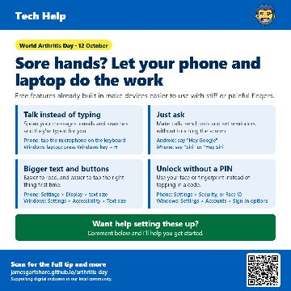
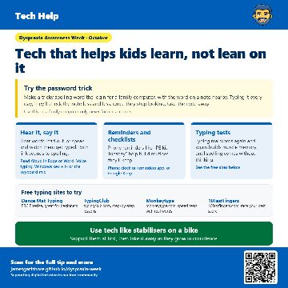
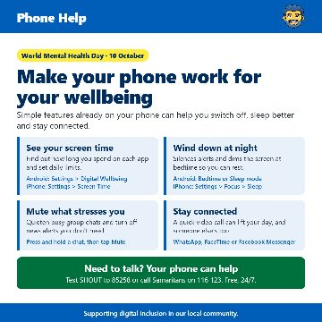
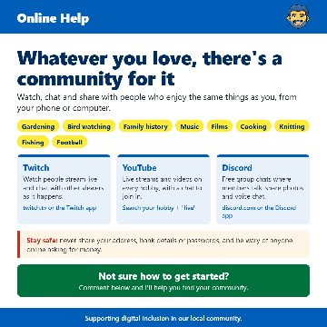
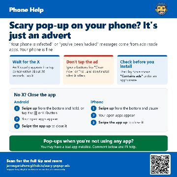
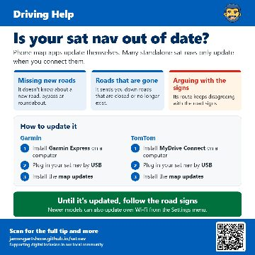

Dyspraxia: tools to stay organised
It's day two of Dyspraxia Awareness Week, and today I wanted to share some free tools that help with staying organised.

Your phone could help in an emergency
Today is the International Day for Disaster Risk Reduction, so I wanted to share a few features on your phone that could really help in an emergency....

Sore hands? Let your phone and laptop do the work
Today is World Arthritis Day, so I wanted to share some features on your phone and laptop that can make life a lot easier if you have sore, stiff or...

Tech that helps kids learn, not lean on it
This week is Dyspraxia Awareness Week, so I wanted to share some ways technology can help children with dyspraxia. The idea is to use tech to help them...

Make your phone work for your wellbeing
World Mental Health Day was on 10 October, so I wanted to share a few simple things your phone can already do to help you feel a bit calmer and more...

Whatever you love, there's a community for it
I wanted to share something that a lot of people don't realise is out there.

Ads popping up out of nowhere?
Following on from my post about scary pop-up adverts, here's what to do if ads keep appearing on your Android phone even when you're not using any app.

Scary pop-up on your phone? It's just an advert
I wanted to share a tip about those scary pop-ups that sometimes appear on phones.

Is your sat nav out of date?
Here's a quick tip for anyone who still uses a sat nav in the car.

Simple facts to keep your computer safe
I wanted to share a few tips about keeping your computer safe, because a lot of people end up paying for antivirus they don't actually need.

What is a QR code?
I just wanted to share a quick tip about QR codes.